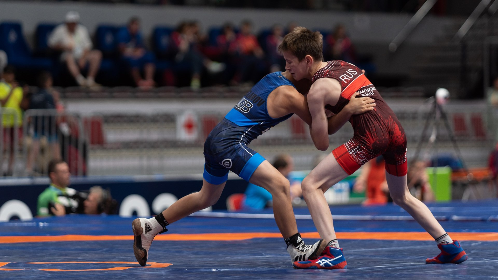
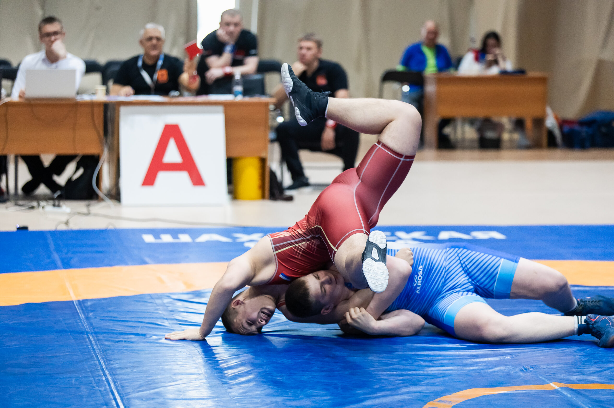

Греко-римская борьба — это один из самых древних и уважаемых видов спорта, который входит в программу Олимпийских игр с момента их возрождения в 1896 году. В отличие от вольной борьбы, здесь запрещены любые захваты ниже пояса, а также использование ног для атаки или защиты.
Этот вид спорта популярен во многих странах, особенно в Европе, Азии и США. Он требует не только физической подготовки, но и психологической стойкости, так как поединки могут длиться до 6 минут и быть очень интенсивными.
Преимущества греко-римской борьбы включают улучшение рукопашного боя, контроль над противником и развитие верхней части тела.
Популярность греко-римской борьбы растет благодаря ее включению в Олимпиады и мировые чемпионаты. В странах вроде России, Ирана и Кубы это национальный спорт, где атлеты достигают высот. Греко-римская борьба полезна и для самообороны, так как учит поднимать и бросать оппонента без использования ног, что развивает силу торса и рук. Многие тренеры рекомендуют греко-римскую борьбу для улучшения навыков в других единоборствах, таких как ММА.

